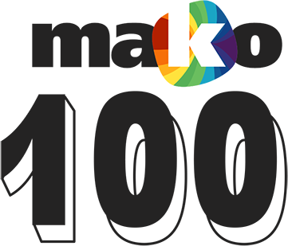

100 דברים שאתם חייבים להכיר הקיץ
כותבים: בן בירון ⋅ נעמה ברקן ⋅ גיל גוטקין ⋅ ריטה גולדשטיין ⋅ לירון גונן ⋅ אפרת ג'רופי ⋅ סיון דה-ליאו ⋅ צליל הופמן ⋅ איתי ולדמן ⋅ נגה זילבר ⋅ נטע חוטר ⋅ שרון טמיר
⋅ עדן יואל ⋅ קרן לוי צדק ⋅ יאיר מור ⋅ עידית נרקיס כ"ץ ⋅ יובל פגי ⋅ אהוד קינן ⋅ תומר קמרלינג
⋅ ארז רונן ⋅ מיטל שבח ⋅ ניב שטנדל ⋅ עריכה: דור צח ⋅ עיצוב: אוהד צבעוני
⋅ עדן יואל ⋅ קרן לוי צדק ⋅ יאיר מור ⋅ עידית נרקיס כ"ץ ⋅ יובל פגי ⋅ אהוד קינן ⋅ תומר קמרלינג
⋅ ארז רונן ⋅ מיטל שבח ⋅ ניב שטנדל ⋅ עריכה: דור צח ⋅ עיצוב: אוהד צבעוני